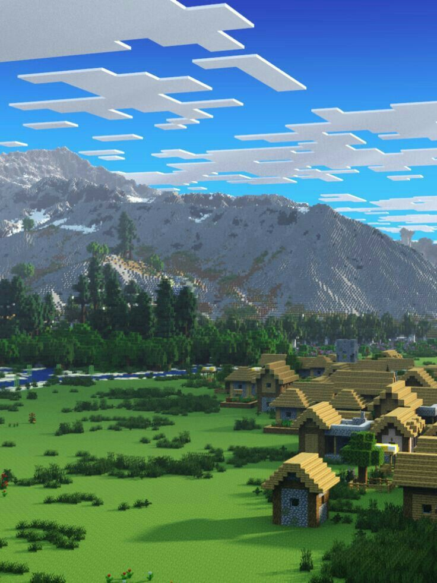
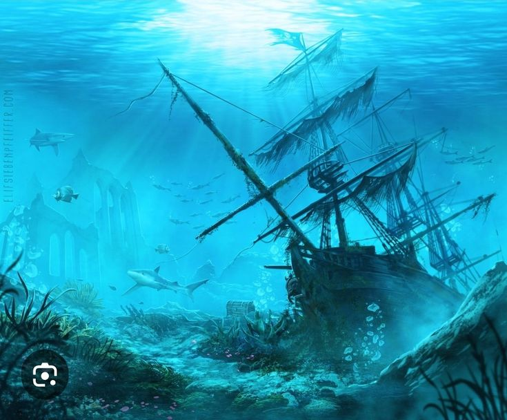

.jpg "Minecraft.")
En Minecraft, existen diversas estructuras generadas naturalmente que se encuentran en el mundo y proporcionan recursos valiosos, desafíos y oportunidades para explorar. A continuación, se describen todas las principales estructuras generadas en el juego:

Las aldeas se generan en biomas como
llanuras, desiertos, sabanas, taigas y tundras de nieve.
Están habitadas por aldeanos que pueden comerciar con el jugador.
Las aldeas incluyen estaciones de trabajo como mesas de herrería y
mesas de cartografía, además de cultivos como trigo, zanahorias y
papas. Los cofres pueden contener alimentos, herramientas, armaduras
y minerales como hierro o esmeraldas. Las aldeas también pueden ser
atacadas por saqueadores en incursiones, lo que obliga al jugador
a defenderlas.
Los templos del desierto se encuentran en biomas de desierto y están hechos principalmente de piedra arenisca. Tienen una cámara oculta bajo el suelo con una trampa de dinamita. Los cofres dentro contienen recursos como huesos, minerales, encantamientos y, en algunos casos, manzanas doradas. El jugador debe evitar activar la trampa de dinamita, que puede destruir los cofres y dañar al jugador.

Estas estructuras se encuentran en el Nether y están hechas de ladrillos del Nether. Son complejas y contienen pasillos y habitaciones llenas de criaturas hostiles como blazes y ghasts. Los cofres en las fortalezas pueden contener pociones, hierro, oro y fragmentos de ender. Además, las fortalezas son esenciales para encontrar el portal hacia el End, donde el jugador debe enfrentarse al Ender Dragon.

Las mansiones se generan en el bioma de bosque oscuro. Son grandes estructuras llenas de habitaciones, pasillos y estancias, habitadas por evokers, vindicators y vexes. Los cofres dentro contienen libros encantados, armaduras y objetos raros. Las mansiones presentan trampas y mobs hostiles, lo que las convierte en un desafío interesante para el jugador.
.jpg "Minecraft.")
Se encuentran en biomas de jungla y están construidos con piedra y ladrillos de musgo. Los cofres dentro de los templos contienen tesoros como esmeraldas, diamantes y manzanas doradas. Estas estructuras están protegidas por trampas, como pistones que disparan flechas, por lo que el jugador debe tener cuidado al explorar.
.jpg "Minecraft.")
En el End, los jugadores encontrarán el portal del End dentro de una fortaleza. Una vez en el End, el jugador podrá explorar las Islas del End, que contienen ciudades del End y barcos del End. Las ciudades están llenas de enemigos como Shulkers y ofrecen tesoros como fragmentos de Elytra, un elemento que permite volar.

Estas estructuras se encuentran en biomas oceánicos y están formadas por bloques de piedra y coral. Están habitadas por guardianes y guardianes ancianos. Las ruinas contienen cofres con valiosos recursos, como prismarina, esmeraldas y encantamientos. Estas estructuras pueden ser peligrosas debido a la presencia de los guardianes y los guardianes ancianos.
.jpg "Minecraft.")
Los bastiones son enormes estructuras que se encuentran en el Nether. Están llenas de trampas, cofres y mobs como piglins y brutes piglins. Los bastiones contienen tesoros raros como fragmentos de netherite, lingotes de oro y objetos encantados. Son una de las estructuras más desafiantes del Nether.
.jpg "Minecraft.")
En el End, se puede encontrar una estructura especial conocida como el "Pilar del End", que tiene una torre de obsidiana rodeada por cristal. Esta estructura está vinculada al enfrentamiento final con el Ender Dragon y puede contener recursos como perlas de Ender.

Existen islas flotantes que se generan de manera aleatoria en el mundo, generalmente en biomas de llanura o montañas. Están formadas por bloques de césped y tienen una pequeña área para explorar.
Estas estructuras naturales en Minecraft son elementos esenciales para la exploración, el comercio, la obtención de recursos y el enfrentamiento contra enemigos poderosos. Cada una ofrece su propia serie de desafíos, recompensas y oportunidades para el jugador.